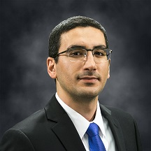
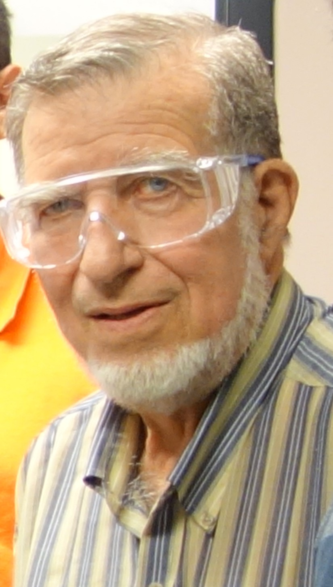
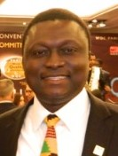
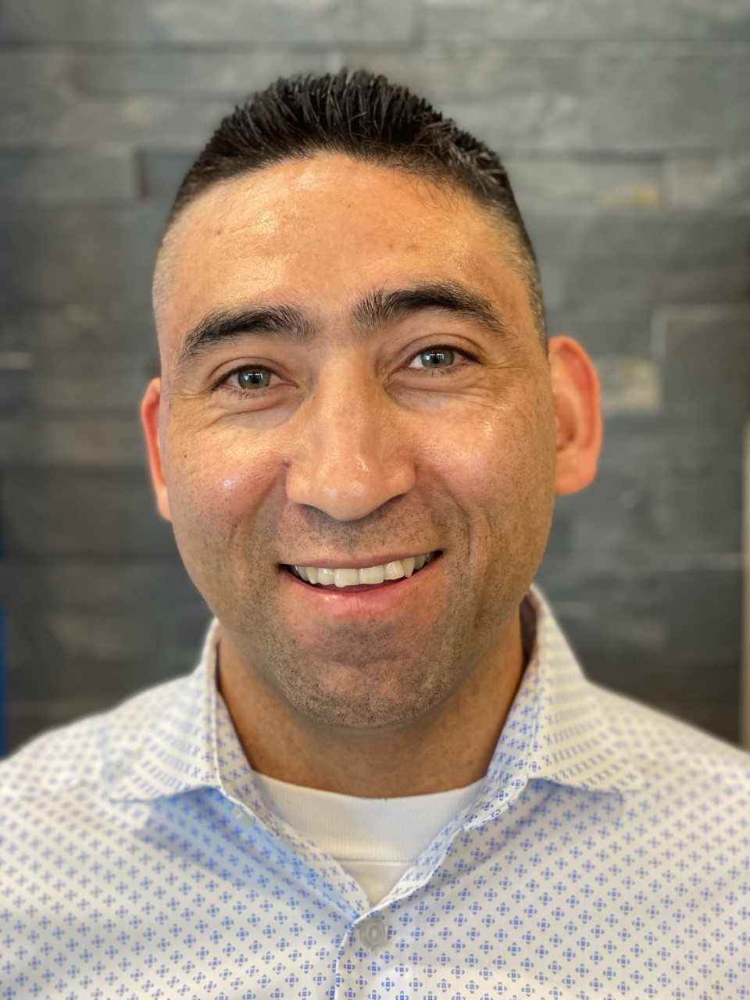
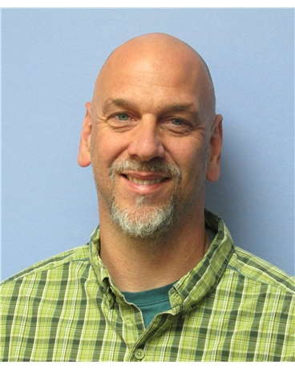
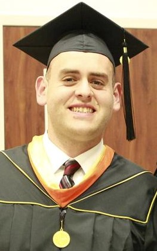
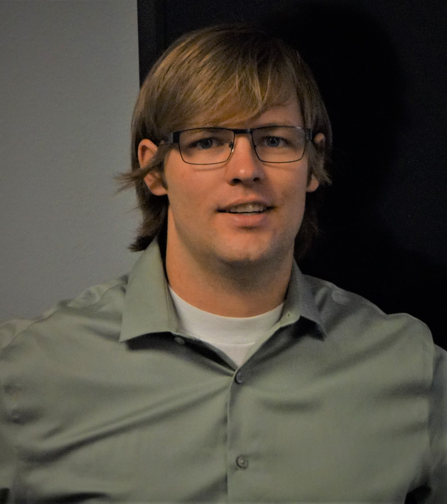

Lab Members

Amin Mirkouei, Lab Director
Programs: Industrial Technology, Technology Management, Mechanical Engineering, Biological Engineering, and Environmental Science
Affiliated Professor, Center for Advanced Energy Studies (CAES)
--------------------------------
Collaborators
Yaqi You (Ph.D., Assistant Professor), Collaborator (2019-present)
Program: Environmental Resources Engineering, State University of New York
Research: Soil fertility and water treatment Funded projects: Manure-to-biochar for agriculture and aquaculture Website: Environmental Microbiome Research (EMR) Lab
Kavita Sharma (Ph.D., Assistant Professor), Collaborator (2019-present)
Program: Assistant Professor, Chemical Engineering, Idaho State University
Research: Biochar, bio-oil, and biofuel characterization Funded projects: Manure-based biochar and bio-oil characterization
Sanaz Shafian (Ph.D., Assistant Professor), Collaborator (2020-present)
Program: Soil and Water Systems, University of Idaho
Research: Precision agriculture, using remote sensing Funded projects: Engineered biochar for removing phosphorus in water
--------------------------------
Visiting Scholars and Postdoctoral Researchers

Amir Mohajeri (Ph.D.), Visiting Scholar (2019-2020)
Programs: Industrial Technology and Mechanical Engineering, University of Idaho
Research: Sustainable design and manufacturing
--------------------------------
Current Ph.D. Students
Rance Bare, Ph.D. Student (2019-present), exp. Fall 2023
Program: Biological Engineering, University of Idaho
Research: Wastewater recycling and nutrient-recycling, using biochar-based products
Ethan Struhs, Ph.D. Student (2019-present), exp. Fall 2023
Program: Mechanical Engineering, University of Idaho
Research: Biomass conversion and upgrading to value-added products

Emmanuel Opare, Ph.D. Student (2019-present), exp. Spring 2023
Program: Mechanical Engineering, University of Idaho
Research: Sustainability assessment of rare earth elements extraction
--------------------------------
Current M.Sc. Students
Matthew Thompson, M.Sc. student (2018-present), exp. Summer 2020
Program: Technology Management, University of Idaho
Research: Sustainable design and manufacturing

Justin Walters, M.Sc. Student (2018-present), exp. Fall 2020
Program: Technology Management, University of Idaho
Research: Sustainable design and manufacturing

Galo Albor, M.Sc. Student (2020-present), exp. Fall 2022
Program: Environmental Science, University of Idaho
Research: Economic and environmental sustainability
--------------------------------
Current Undergraduate Students
Timothy Adelizzi, B.S. Student (Spring 2020-present)
Program: Industrial Technology, University of Idaho Research: Automation and smart manufacturing
--------------------------------
Graduate Alumni
Benjamin Hersh (M.S. in Mechanical Engineering, 2019)
Thesis: "Biochar Production, Applications, and Waste Management for Enhancing Sustainability Benefits across Food-Energy-Water Systems." Position: Project Engineer/Manager at Curtiss-Wright

Samuel Hansen (M.S. in Mechanical Engineering, 2019)
Thesis: "Synthesis of Biofuels and Blended Fuels from Biomass Feedstocks: Strategies for Upgrading Bio-oil." Position: Project Engineer at Premier Technology
Alby Joe George (M.Sc. non-thesis in Technology Management, 2020)
Project Title: "Fast pyrolysis of Biomass to Bio-oil and Upgrading it by Electrochemical Hydrogenation and Ultrasound Cavitation: Design and Analysis." Position: -

Sergio Hernandez (M.Sc. non-thesis in Environmental Science, 2020)
Project Title: "Lignocellulosic Biomass as a Renewable Energy Source and Wear Contributions on Biomass Preprocessing Systems." Position: Researcher at Idaho National Laboratory
--------------------------------
Former Lab Researchers
Brian Donovan (Ph.D. Student in Biological Engineering, Fall 2019 and Spring 2020): Bioelectrochemical technologies for water-energy production
Meesha Frye (B.S. Student in Industrial Technology, Fall 2019 and Spring 2020): Social life cycle assessment
Nathaniel Marlin (B.S. Student in Environmental Science, Fall 2019): Sustainability assessment across food-water systems
John Chadron Ryan (M.S. Student in Mechanical Engineering, Spring/Summer/Fall 2018): Bio-oil and biochar production
Darpan Mukesh Shah (Ph.D. Student in Computer Science, Summer 2018): Cyber-physical bioenergy systems
Scott Ashby (Researcher, Summer 2018): Automizing biomass-based fuel production, using a programmable logic controller